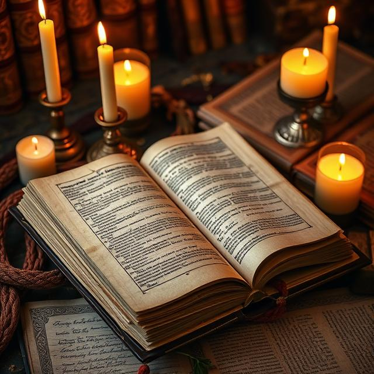

След дълга нощ на мрак и вълнения, слънцето на следващия ден се появи бавно, като бледа луна, разсейваща мъглата на Рейвънфорд. Улиците бяха празни и тихи, все още сковани от миналата нощ, когато всички обитатели на града бяха изпълнени с непознат страх. Много от тях все още не можеха да повярват, че всичко това беше приключило. Легендата за Леон, за ритуала, за проклятието — всичко, което беше заобикалял тяхния свят, се чувстваше далечно, като кошмар, от който се събуждат. Джо стоеше на покрива на стария хан и наблюдаваше как слънцето се издига, разкъсвайки мрак и създавайки нови възможности. Но въпреки всичко, сърцето му беше тежко. Той беше започнал да разкрива малка част от мистерията на Рейвънфорд, но все още имаше толкова много неясноти. Леон, прокълнатият благородник, изглеждаше не само човек на властта и знанията, но и на старите сили, които стояха зад проклятието на града. Джо беше погълнат от мисълта за това, че всеки следващ ден в Рейвънфорд можеше да бъде последният. Зак се появи на покрива с прегърбено рамо, облечен в черни дрехи, които бяха изпълнени с мрак, но и с решителност. В ръката му блестеше сребърният нож, който беше използвал по време на ритуала. Джо се почувства малко неуютно, но реши да говори. "Какво ще правим сега?" — попита той. Зак погледна към хоризонта и замълча за момент. "Ще продължим да търсим, Джо. Историята на Рейвънфорд е вкоренена в тези руини и в тези хора, които сякаш са забравили своята истинска същност. Леон беше само последното доказателство за това, как много сме се отклонили от това, което трябваше да бъдем." "Тогава какво трябва да направим?" — попита Джо, усещайки как притеснението започва да го гони. "Трябва да разкрием миналото на Леон. Защото именно там ще открием какво точно е причината за проклятието, и може би дори как да го премахнем." — отговори Зак, с някаква тежка решителност в гласа му. "Трябва да намерим записите му. Книгите, които е изследвал, бележките му... всичко." Джо кимна. Разбираше, че това ще бъде един от най-трудните етапи на тяхното разследване, но той бе готов да се изправи срещу това. Рейвънфорд не беше просто град. Той беше място, което носеше в себе си загадки, тайни и ужасяващи реалности. Зак и Джо се насочиха към библиотеката — старо, покрито със зелени лишеи здание в центъра на града. Вратата беше леко открехната, а вътре цареше тишина, нарушавана само от шума на вятъра, който проникваше през пролуките. Рейвънфорд не беше място, което създаваше радостни спомени, но неговата библиотека беше стара, можеше да съдържа много от миналото на този странен град. Докато се скитаха сред старите книги и манускрипти, Джо не можеше да не забележи нещо странно в атмосферата. Този път, нещо се беше променило. Имаше нещо по-различно във въздуха, по-тежко и напрегнато. Може би това беше само начинът, по който духът на града влияеше на хората. Но сега, след случилото се с Леон, всичко изглеждаше различно. Те намериха записите на Леон в задния склад на библиотеката, в стари кожени томове, натрупани високо на рафтовете. Зак издърпа една книга и я отвори на първата страница. Листата на страниците бяха изсъхнали и жълти, а почеркът на Леон изглеждаше почти безживотен. "Това е, Джо," — каза Зак, показвайки на Джо първия запис. — "Това е, което ни трябваше." Съществуваше теория, в която Леон беше открил не само историята на града, но и начините да манипулира древни сили. Тези сили бяха част от заклинанията, които били използвани при изграждането на руините. Леон започнал да прави експерименти, за да получи достъп до тези сили. Но за да има пълен контрол, се нуждаел от жертви. Този факт наистина го изненада. Рейвънфорд не само че бил омагьосан, но бил изцяло свързан с тъмните сили, които Леон беше събудил. "Няма да е лесно да се справим с това," — каза Джо, усещайки тежестта на задачата. "Знам," — отвърна Зак, свивайки рамене. "Но ако не го направим, Леон ще е не само нашето минало, той ще бъде и нашето бъдеще." Но както Джо четеше повече от записите, той започна да усеща странно усещане. Тези записи разкриваха една не само мракна, но и много лична част от Леон. Това не беше просто човек, потънал в мрак. Това беше човек, изгубил себе си в битката за контрол над древните сили. С тези нови знания, те щяха да се изправят срещу Леон отново. Но този път Джо не беше просто наблюдател. Той беше част от борбата, разкриваща ужасяващата истина на Рейвънфорд.
